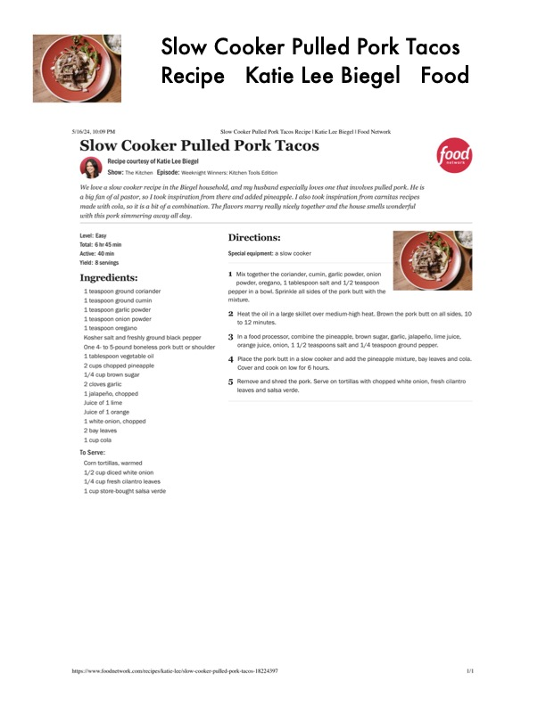

Slow Cooker Pulled Pork Tacos

Original cookbook page 589
Ingredients
- 1 teaspoon ground coriander
- 1 teaspoon ground cumin
- 4 teaspoon garlic powder
- 1 teaspoon onion powder
- 1 teaspoon oregano
- Kosher salt and freshly ground black pepper
- One 4- to 5-pound boneless pork butt or shoulder
- 1 tablespoon vegetable oil
- 2 cups chopped pineapple
- 1/4 cup brown sugar
- 2 cloves garlic
- 1 jalapefio, chopped
- Juice of 1 lime
- Juice of 4 orange
- 1 white onion, chopped
- 2 bay leaves
- 1 cup cola
- To Serve:
- Corn tortillas, warmed
- 1/2 cup diced white onion
- 1/4 cup fresh cilantro leaves
- 1 cup store-bought salsa verde
- Slow Cooker Pulled Pork
- Recipe Katie Lee Biege
- Slow Cooker Pulled Pork Tacos Recipe | Katie Lee Biegel | Food Network
Instructions
- Special equipment: a slow cooker
- Mix together the coriander, cumin, garlic powder, onion powder, oregano, 1 tablespoon salt and 1/2 teaspoon pepper in a bowl. Sprinkle all sides of the pork butt with the mixture,
- Heat the oil in a large skillet over medium-high heat. Brown t to 12 minutes.
- Ina food processor, combine the pineapple, brown sugar, ga orange juice, onion, 1 1/2 teaspoons salt and 1/4 teaspoon 4, Place the pork butt in a slow cooker and add the pineapple r Cover and cook on low for 6 hours.
- Remove and shred the pork. Serve on tortillas with chopped leaves and salsa verde. _nttps://www foodnetwork com/recipes katie-lee/slow-cooker-pulled-pork-tacos-18224397
Recipe #589 from collection